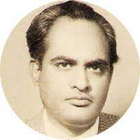

|  |
Ibn-e-Safi 💖
Ibn-e-Safi (26 July 1928 – 26 July 1980) |
Early life and education
Asrar Ahmad was born on 26 July 1928 in the town 'Nara' of district Allahabad, India.
His father's name was Safiullah and mother's name was Naziran Bibi.
He received a Bachelor of Arts degree from Agra University.
Bibliography
- Allama Dahshatnak
- Alfansey
- Khatarnak Lashein
- Saanpon Ke Shikari
- Daulat-e-Gham
- Zahan se Dil ka Bar Utra Hai
- Chhalakti aayay
- Aaj ki raat
| Name |
DOB |
| Abcdef |
2000 |
| Xyzabc |
2010 |
Skills
| A | 🌟🌟🌟🌟 |
| B | 🌟🌟🌟👠|
|
| C | 🌟🌟🌟 |
| D | 🌟🌟🌟🌟 |
|